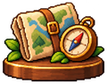
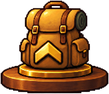

PokéCorner
1240 Встречи · 2
Мой уголок


Eevee · #0133
Уход
Поимка
Лакомства
Итоговые статичные экраны фиксированной комнаты. Значения коллекции и кошелька демонстрационные; кнопки не исполняют игровую логику.
Расходники и все шесть ягод в одном списке.

5 штук для питомца
У вас:8
+7500 CP
У вас:1
×4 к шансу shiny следующего исхода
Активен:0
Выберите допустимую ветвь
У вас:1
Выберите доступный вид из рецепта пары
У вас:0
+300 опыта; полезная прибавка видна до применения
У вас:2
Красная ягода · для рецептов и эволюций
У вас:6
Синяя ягода · для рецептов и эволюций
У вас:6
Жёлтая ягода · для рецептов и эволюций
У вас:6
Розовая ягода · для рецептов и эволюций
У вас:6
Фиолетовая ягода · для рецептов и эволюций
У вас:6
Зелёная ягода · для рецептов и эволюций
У вас:610 цепочек и16 самостоятельных целей. В каждой цепочке одна карточка; будущий вид награды скрыт.
Место 1Место 2Место 3
Откройте25 видов
8 / 25 видов
Ступень I · следующая цель впередиСоберите10 питомцев
8 / 10 питомцев
Ступень I · следующая цель впереди
Поймайте25 покемонов
5 / 25 поимок
Ступень I · следующая цель впередиЗавершите10 походов
3 / 10 походов
Ступень I · следующая цель впереди
Посетите4 местности
3 / 4 местностей
Ступень I · следующая цель впереди
Поднимите троих до уровня10
0 / 3 питомцев уровня10
Ступень I · следующая цель впередиПодготовьте питомца к эволюции
58% до готовности к эволюции
Ступень I · следующая цель впереди
Вылупите первый начальный вид потомства
0 / 1 начальных видов
Ещё не открыто
Выполните первый переход эволюции
0 / 1 переходов
Ещё не открыто
Получите первого shiny-покемона
0 / 1 shiny-видов
Ещё не открыто
Дайте питомцу кличку
Ещё не открыто
Отметьте питомца избранным
Ещё не открыто
Завершите поход тройкой с бонусом каждого участника
Ещё не открыто
Получите дополнительную находку в экспедиции
Ещё не открыто
Завершите поход вылупившимся питомцем
Ещё не открыто
Завершите поход родителем и его потомком вместе
Ещё не открыто
Завершите поход питомцем после эволюции
Ещё не открыто
Получите все шесть типов ягод
Ещё не открыто
Выполните ягодный рецепт эволюции
Ещё не открыто
Выберите ветвь эволюции камнем
Ещё не открыто
Выберите потомство талисманом
Ещё не открыто
Получите каждого доступного легендарного покемона
Ещё не открыто
Откройте вторую особенность на уровне10
Ещё не открыто
Переобучите особенность
Ещё не открыто
Передайте питомца в добрые руки
Ещё не открыто
Примените зелье с полезной прибавкой опыта
Ещё не открытоНастройте спутника под свой день. Настройки сохраняются сразу.
В чилле клубок напоминает о внимании, но питомец не уходит. В хардкоре после 6 часов невнимания он уходит на час.
Перетащите питомца в удобное место. Сохранённые положение, монитор и угол экрана переносятся при обновлении.
Движение эффектов следует настройке анимаций Windows. Когда они отключены, недовольство остаётся неподвижным значком до внимания.
Активность учитывает мышь, клавиатуру и геймпад. Содержимое нажатий не записывается.
Удаление сбросит коллекцию, предметы, достижения и настройки.
Добро пожаловать в большой уютный апдейт. Ваша коллекция на месте. Шесть коротких шагов покажут новые возможности.
Макет последовательности: приложение показывает по одному шагу. Здесь все шаги доступны прокруткой.
Один клик — погладить. Двойной — открыть меню. Кольца прогресса можно включить в настройках.
Уход помогает расти, активность приносит покеболы и лакомства. Заслуженные трофеи занимают три места на полке.
Ищите и фильтруйте коллекцию по типу, редкости и доступной эволюции. В карточке есть характер, дата поимки, кличка и ветка роста.
Одновременно идёт один поход. Выберите местность, сложность и длительность. Трое получают полную добычу и шанс находок и встречи.
Посмотрите совместимость и 2–3 варианта потомства. Запуск стоит ягоды; талисман позволяет выбрать доступный вид. Малыш всегда начинает семью с первого звена.
Шесть видов ягод находят в походах или покупают. Лакомства отдельно. Камень выбирает ветку эволюции, а достижения становятся трофеями интерьера.
Обучение ничего не тратит. Можно повторить его из настроек.
Состояния действий: всегда понятно, что требуется, что будет получено и что останется после отмены.
У вас 3 питомца этого вида. Выберите, чью карточку открыть.